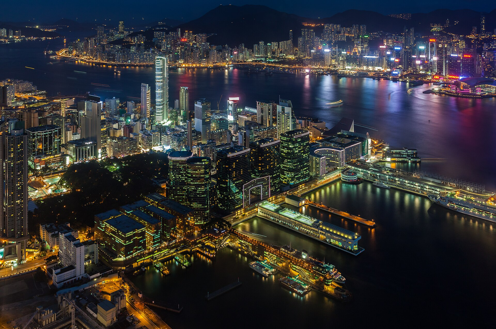
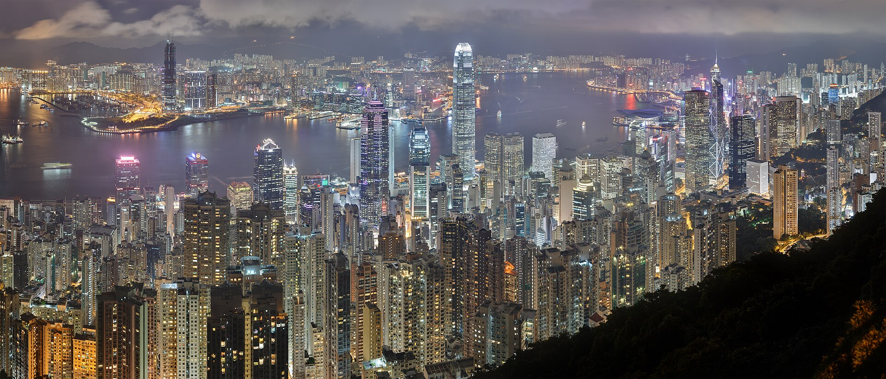
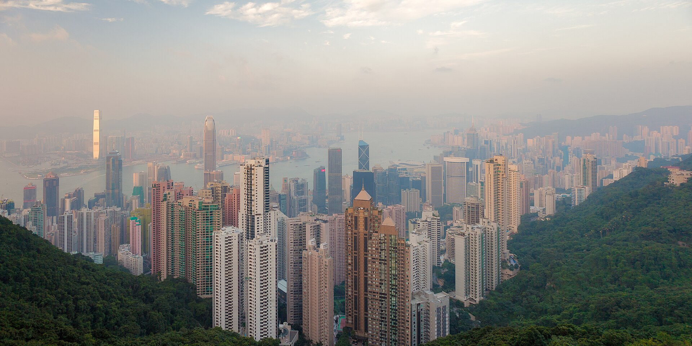
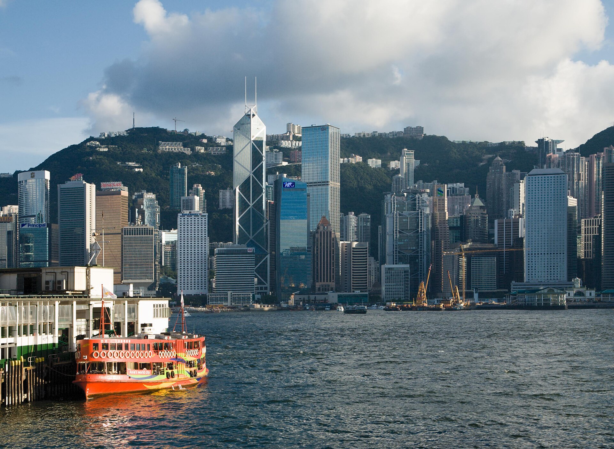
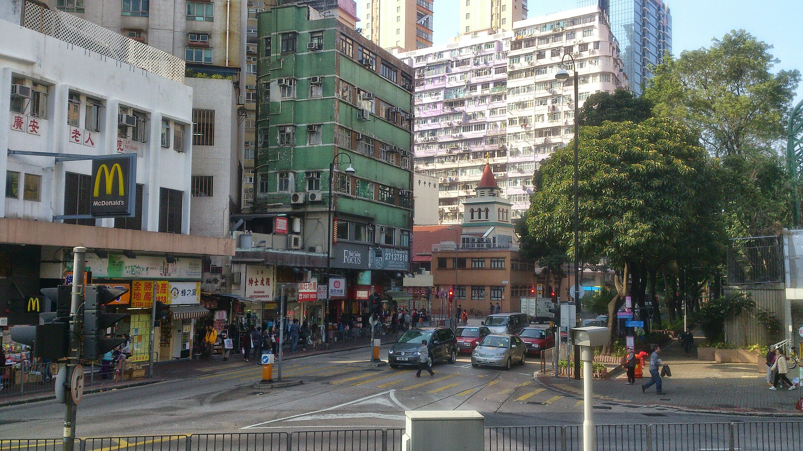
香港把山、海和密集的街区放在一小时车程之内。这份攻略整理了 7 个热门景点、 必吃美食、常用交通和一张可点击的地图，按 3–5 天自由行来安排。
按地理区域分成三条线，同一组的地点可以同一天连着走。
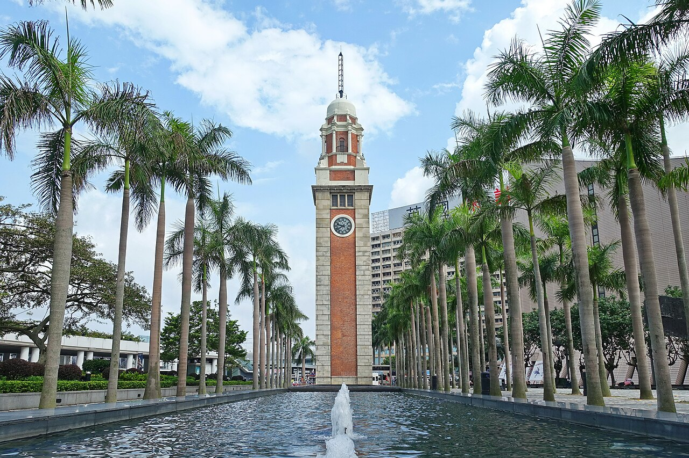
星光大道、香港艺术馆、海港城都在这条海滨线上。
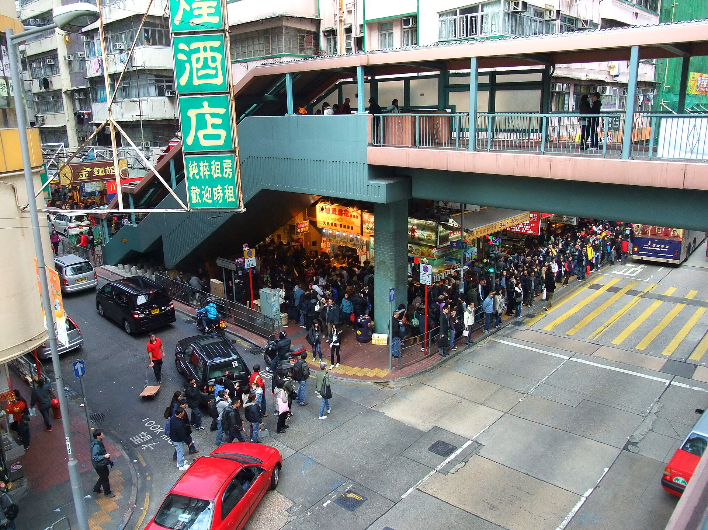
女人街、波鞋街、金鱼街连成一片，人流最密集。
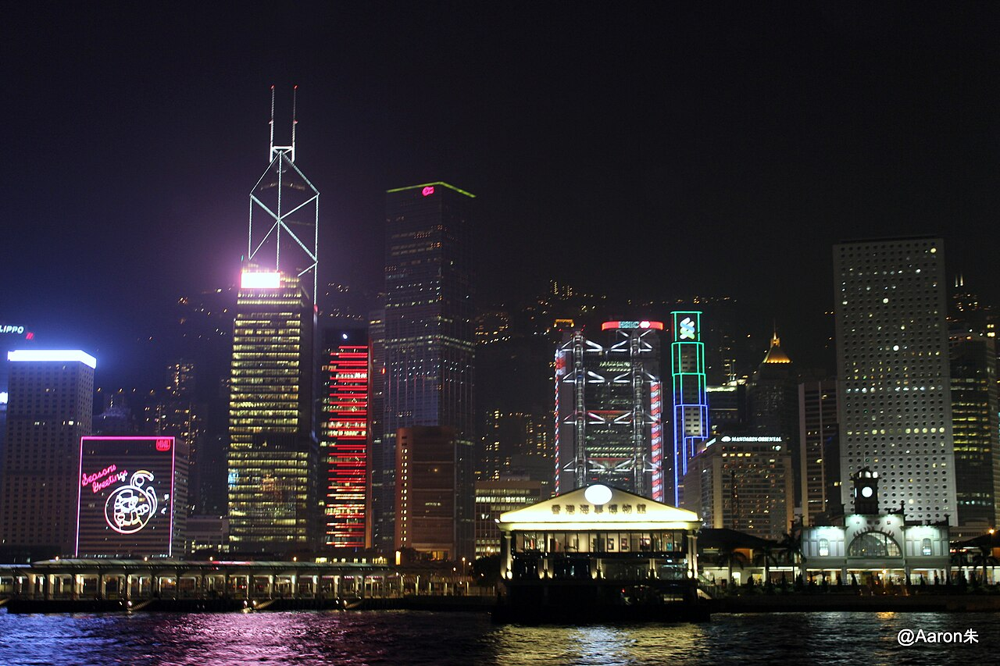
晚上 8 点前后有灯光表演，海滨长廊任意一段都能看。
过海去香港岛可以坐天星小轮或港铁，两边都很快。
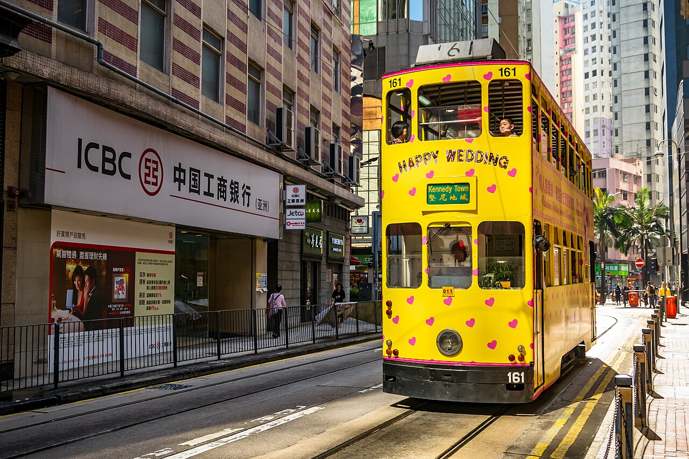
半山扶梯、石板街、画廊和苏豪餐厅都值得慢慢走。
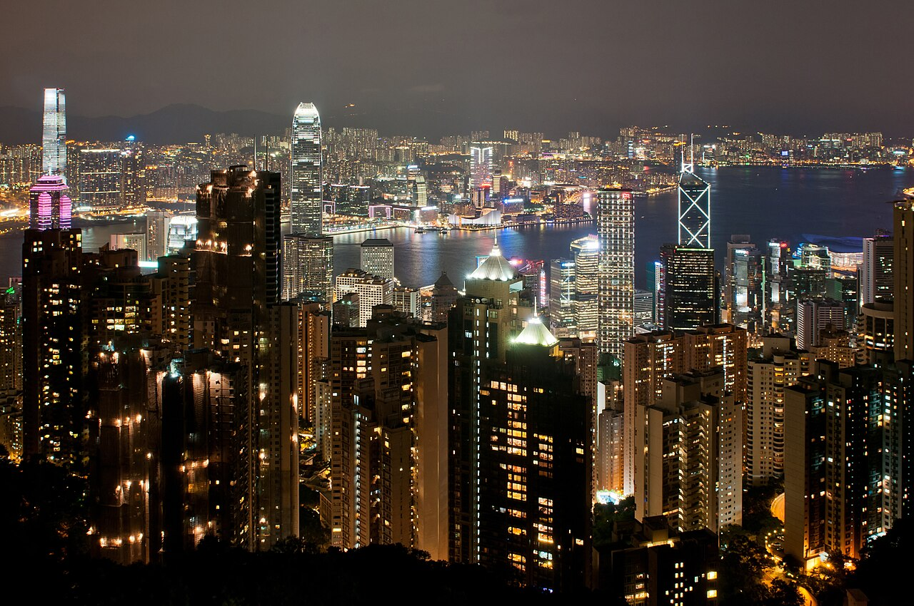
凌霄阁摩天台 428 可 360° 俯瞰维港与九龙。
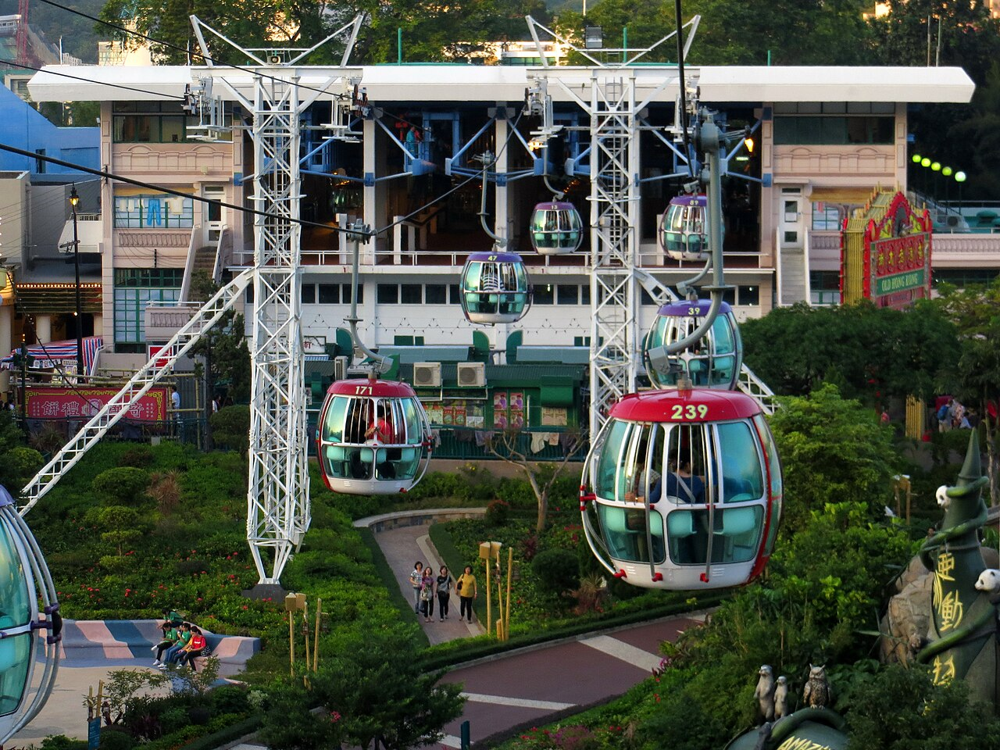
山下与山上园区之间用缆车连接，缆车本身也是观景。
岛上景点之间用「步行 + 港铁」组合最省时间。
七个主题园区，演出与巡游集中在下午到晚上。
从东涌站出发最方便，建议留一整天。
六样先吃一轮，基本就摸到本地口味了。
一张八达通基本能解决九成以上的出行需求。
覆盖大部分热门景点，按里程计费，过海和跨区最快。
双层巴士能到港铁之外的海边与山上区域，上层第一排就是观景位。
往返尖沙咀与中环／湾仔，几分钟一班，性价比最高的维港观光方式。
交通、便利店、部分餐厅通用的储值卡，成人卡含按金，离港前可以退。
先选区域，再看地图上的位置。
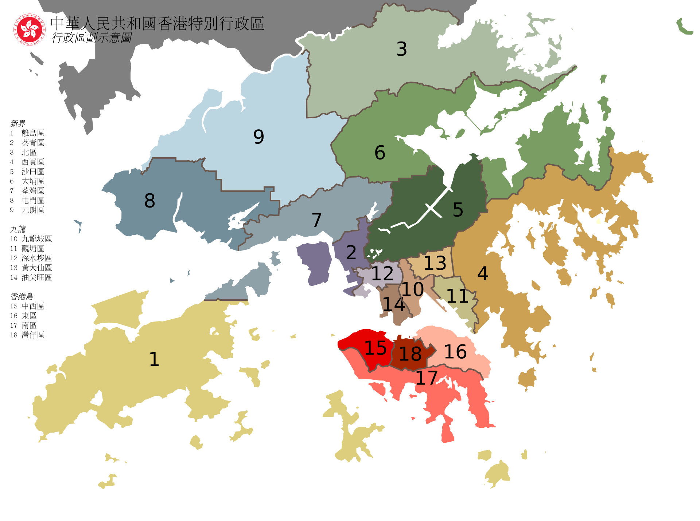
联网时会显示可缩放的实景地图；没有网络就用分区静态图，热点同样可点。 地图数据 © OpenStreetMap 贡献者，底图由 OpenFreeMap 提供。